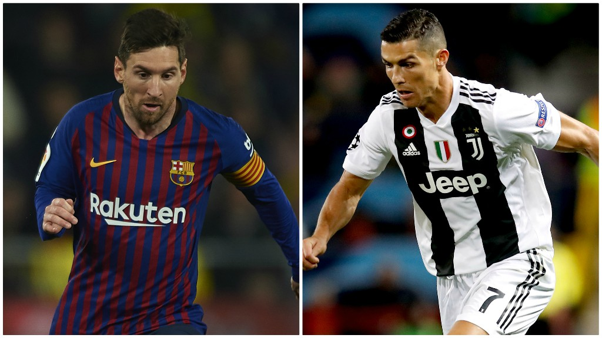

Lionel Messi and Cristiano Ronaldo have been battling to be regarded as the greatest of all time for many years - but can you guess who holds which record?
Both men were in action in the last eight of the Champions League on Wednesday as Messi's Barcelona played Manchester United and Ronaldo's Juventus faced Ajax.